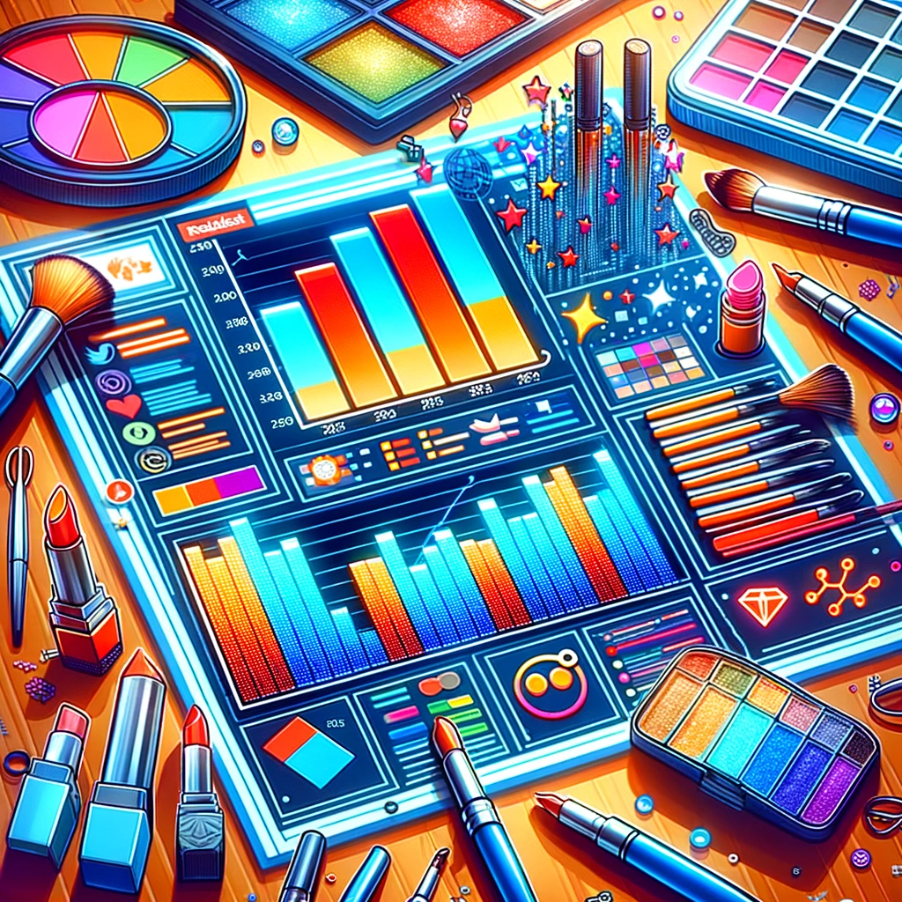

In our groundbreaking study of the "MakeupAddiction" subreddit spanning from 2021 to 2023, we unveiled the evolving language and sentiments within the beauty community. Our non-technical analysis focused on understanding how the community interacts with key influencers and hot topics, the sentiments towards top beauty brands, and the shifting beauty-related terminology over time.
In essence, our project provides key insights into the emotional and linguistic dynamics of the beauty community on Reddit. These findings are instrumental for influencers, brands, and enthusiasts in understanding and engaging with this vibrant online community.
Basic Data Text Analysis
Text Length Analysis
In this Text Length Distribution Analysis, we explore the histograms revealing patterns in comment and submission text lengths. Our findings show a preference for brevity: comments typically under 500 characters and submission texts peaking between 20 to 40 units, with longer texts being increasingly rare. This concise analysis aims to uncover the underlying reasons for these trends, potentially influenced by platform norms and user behavior. Join us in deciphering these patterns and understanding the dynamics of textual communication on the platform.
The histogram presents a left-skewed distribution, highlighting that shorter comments are more prevalent. The highest frequency is observed for comments with fewer than 500 characters, as indicated by the tallest initial bar. There is a notable decline in frequency as text length increases, with the subsequent bars quickly diminishing in height, reflecting fewer comments of longer lengths. Comments exceeding 1000 characters are scarce, and the occurrence of comments beyond 1500 characters is exceptionally rare, as shown by the sparse bars at the right end of the graph.
The histogram displays a clear preference for brevity in text submissions, with a significant majority being under 250 characters. The frequency of longer texts drops sharply, indicating that submissions rarely exceed 1,000 characters. This trend of shorter submissions could be influenced by various factors, such as platform restrictions or the nature of the content. A deeper analysis of the platform's guidelines and user behavior would be necessary to understand the underlying causes. A notable observation is the prevalence of submissions with a selftext length of 0, attributable to the fact that titles are mandatory for submissions, but the body text is optional.
The histogram shows the distribution of text lengths in submission texts, with the majority being short, peaking between 20 to 40 units in length. The distribution is right-skewed, indicating that longer texts are less common, with very few submissions approaching the maximum observed length of 300. This suggests a preference or requirement for brevity in submissions.
Most Common Words Analysis
Analyzing the "Top 20 Words" tables for both submissions and comments within the MakeupAddiction subreddit reveals distinct patterns of interaction and content moderation. In the submissions table, the prevalence of 'deleted' and 'removed' as the top two words implies rigorous moderation activity, perhaps indicating strict adherence to community guidelines or a high rate of content turnover. The presence of 'makeup' as the third most frequent term underscores the subreddit's primary focus. Additionally, terms like 'skin', 'foundation', and 'look' reflect common topics of discussion related to beauty and makeup application.
In the comments table, the word 'please' ranks highest, which may point towards a culture of courtesy within the subreddit's discourse. 'Search' being the second most frequent word could imply a norm of self-service in finding information, while 'post' suggests active discussions and content sharing. Words such as 'thank', 'mua', and 'sidebar' further indicate a supportive environment where gratitude is expressed, expertise is acknowledged, and resources are utilized.
The provided bar plot illustrates the term frequency changes in submissions over three consecutive years: 2021, 2022, and 2023. In 2021, the terms "removed" and "makeup" dominate the chart, indicating they were prevalent in discussions or submissions for that year. As we progress to 2022, there's a noticeable decrease in the frequency of almost all terms, with "removed" still leading but with a significantly lower count compared to the previous year. This could suggest a change in the nature of discussions, a different user base, or perhaps a change in content policies or trends. By 2023, all terms show a subdued presence, with no term reaching the heights observed in 2021, which might imply either a diversification in the vocabulary used in submissions or a decrease in activity or engagement levels. This downward trend across all terms suggests a shift in the community's focus or possibly the introduction of new, unrepresented terms that have taken precedence in submissions.
The plotted data illustrates the monthly frequency of selected terms over a year, providing insights into their usage patterns. For instance, the term "foundation" shows a significant decline from the beginning of the year until mid-year, followed by a relatively stable frequency towards the year-end. In contrast, the term "makeup" experiences a sharp decline early in the year, then fluctuates moderately throughout the remaining months. The term "use" presents a general downward trend with a slight increase towards the end of the year. Notably, the term "deleted" spikes early in the year, decreases significantly in the following months, and then levels out. The interactive element of the plot allows users to click on a dropdown menu to view the fluctuations of each specific term, providing a tailored analysis of term usage that can reflect various external factors or internal shifts in discussion themes.
The provided plots display the frequency of specific terms within comments over the course of three years. Each bar represents a year, and the colors differentiate the terms. The term "search" peaked in early 2021, followed by a sharp decline and leveling off throughout the rest of the year. "Please" shows a similar pattern of decline from a high early in the year. The term "thank" has a more consistent presence with less variability. "Use" shows a significant decline over time, potentially indicating a shift in the context or focus of the discussions. The term "posting" has a less consistent pattern, with noticeable peaks and troughs, suggesting varying engagement or relevance throughout the year. The fluctuation in the usage of these terms could reflect changes in the interests, behaviors, or rules governing the comments over time. It is also important to use the dropdown menu to select individual terms for a more detailed view of their frequency changes month by month.
The provided plots represent term frequency changes over time, with each plot corresponding to a specific term indicated by the dropdown menu. For instance, the term "search" shows a significant decline from the first month before stabilizing at a lower frequency for the subsequent months. The term "please" also exhibits a decrease but with some fluctuation in the middle months. "Thank" sees a sharp drop initially, followed by a relatively stable trend with minor ups and downs. "Use" maintains a downward trend with a slight recovery towards the end of the year. The term "posting" displays more variability with peaks and troughs indicating inconsistent usage over the months. To analyze specific term fluctuations accurately, one should select the term from the dropdown menu provided in the interactive plot interface. This granular approach allows for a focused analysis of how each term's usage has changed over time, which could be indicative of shifts in discussion topics or the popularity of certain phrases within the dataset.
TF-IDF Analysis
Submissions:
| Term | Score |
|---|---|
| eczema | 13.708287019066976 |
| lift | 12.208601970593994 |
| one | 11.11660670330881 |
| likelooks | 10.255340891195644 |
| drywounds | 10.255340891195644 |
| gel | 9.574561500121025 |
| brow | 9.22686764051506 |
| colour | 9.516345331804883 |
| palettes | 8.882420718741153 |
| scalp | 8.75126349441937 |
| whoever | 8.175899349515808 |
| dangerous | 8.175899349515808 |
| difficulty | 7.690391533734107 |
| amounts | 7.770434241407643 |
| returned | 7.393140010266175 |
| experimenting | 6.4051932894855845 |
| disappointed | 6.275659237293683 |
| result | 6.080953621300006 |
| tried | 5.814794136093912 |
| applied | 5.264908304416907 |
| removed | 1.089527284602935 |
The results indicate that terms such as 'lift', 'gel', 'brow', and 'eczema' have high IDF scores, which implies these terms are relatively rare and possibly of significant importance within the corpus. In contrast, terms like 'removed' have a lower IDF score, suggesting they are more common in the dataset. The highest IDF score for 'eczema' suggests it's a specific and infrequent topic in the discourse, indicating discussions may be centered around niche or specialized subjects. These IDF values provide insights into the distinctiveness of terms within the submissions and comments, highlighting the terms that could be of particular interest for further analysis or for understanding the thematic focus of the conversations.
Comments:| Term | Score |
|---|---|
| aww | 6.182638537820234 |
| sweet | 5.370313296964741 |
| omg | 4.375410677520932 |
| thats | 3.384324924342017 |
| thanks | 3.2649055361271606 |
| much | 2.887663770562357 |
| thank | 1.7262858300691992 |
In analyzing the results of the Inverse Document Frequency (IDF) transformation on the comments dataset, we see that the terms 'aww', 'sweet', and 'omg' have the highest IDF scores in their respective documents, suggesting they are less common across all comments and may carry more weight in the context they are used. This could reflect specific, sentiment-laden discussions or reactions within the comments. The accompanying terms 'thank', 'thats', 'thanks', and 'much' are also of interest but have lower scores, indicating they are more frequently used. The IDF scores thus help in identifying which terms are more unique and potentially more significant within the text data.
Analysis Report
1. Evaluating Influencers’ Emotional Impact with Additional Data Insights
- 1. Project Overview and Data Preparation
- 2. Data Preprocessing and Analysis
- 3. Sentiment Analysis Implementation
- 4. Visual Representation and Insights
Project Overview
After carefully examining our data, we faced challenges in correlating comments with their corresponding submissions, despite efforts using inner joins on submission IDs and comment link or parent IDs. Due to these difficulties, we have redirected our business goal. We are now concentrating on analyzing the responses of influencers to their audience. This new focus allows us to investigate the interactive exchanges and feedback between influencers and their followers, providing key insights into the nature of engagement within our platform.
The sentiment analysis of the provided authors reveals distinctive communication styles. Notably, "sadperson123456," "ahbagelxo," and "waterfromthevalley" consistently exhibit an optimistic tone, with a significant abundance of positive sentiments in their content. This suggests a generally positive and upbeat approach in their communication. On the contrary, "zemele" stands out for a more critical or negative expression, as evidenced by the higher count of negative sentiments. Authors such as "Sick-Sad-World32" and "DisheveledBoy" present a more balanced mix of sentiments, showcasing a nuanced and diverse communication style. The prevalence of both positive and negative expressions suggests a range of topics and perspectives covered in their content. Meanwhile, authors like "cuziluvmakeup," "Veeeeezy," and "Dominorepulsa" exhibit a clear positive dominance, suggesting an overall optimistic or favorable communication style.
Pearson Correlation Coefficient: 0.362
P-value: 0.049
The Pearson correlation coefficient between "posting karma" and "creator score" is approximately 0.362, indicating a moderately positive correlation. The p-value of 0.0494 is close to the common significance threshold of 0.05. This suggests that there is some evidence to reject the null hypothesis that the correlation is zero (no correlation). The positive correlation could imply that users who receive positive engagement externally out of our dataset, possibly through quality contributions or popular content, are likely to be recognized as influential contributors by our creator score calculating scheme.
2. Unlocking Positivity in Hot Topics:
we aim to analyze sentiment within the top 35 most commented tags, identified as "Hot sensitive topics." This analysis will enable creators, moderators, and brands to better understand community reception and adjust their strategies accordingly. By employing Natural Language Processing (NLP) tools for sentiment analysis, we'll process submission texts to identify positive sentiments, thus providing valuable insights for content alignment, brand positioning, and community management.
In our data processing procedure, we utilize a Natural Language Processing (NLP) pipeline to extract tags from each submission within the "MakeupAddiction" subreddit. Initially, we parse the 'link_flair_text' field to identify tags. These tags are then segmented into tokens, normalized to lower case for consistency, and cleansed to remove any non-alphanumeric characters. Abbreviations like 'fotd' are also expanded to ensure clarity. The result is a set of clean, uniform tags associated with each submission, providing a structured dataset ready for in-depth analysis and insights extraction.
The table reveals a notable decline in comment frequency beyond the 35th tag, indicating a concentrated focus of community discourse on a select few topics. By targeting our NLP and sentiment analysis on these top 35 tags, we capture the essence of the subreddit's most active discussions, providing a robust and representative dataset. This focused approach enhances the precision of our insights, offering a clear understanding of the community's interests and guiding stakeholders in developing highly resonant strategies.
The data indicates a heavy-tailed distribution in user engagement on the forum, with 'face of the day' and 'question' tags dominating the conversation with over 250,000 comments each. This is contrasted by a steep decline in engagement for other tags, such as 'discussion' at 66,000 comments, and even more so for 'removal', 'rule', and 'photo', none surpassing 20,000. This distribution suggests a user focus on a few hot topics. Sentiment analysis on these tags could further elucidate the nature of user interactions, a step we intend to pursue to gain better insights into subreddit dynamics.
From a business perspective, the 'face of the day' and 'question' tags present prime opportunities for marketing, with potential for high returns on engagement efforts. However, the less popular tags, reflecting specific interests, also offer niche marketing possibilities and community-building potential. A balanced engagement strategy could leverage high-traffic tags for visibility while tapping into lower-traffic discussions for niche positioning. Seasonal trends, such as increased activity around 'Halloween', also suggest opportunities for timely and thematic engagement, particularly for content creators and marketers looking to capitalize on these peak interest periods.
Utilizing TextBlob, we conducted sentiment analysis on the titles and bodies of subreddit submissions, a method tailored to Reddit's unique format where titles often contain the most compelling and expressive words, while the body text is optional. We classified sentiments into Positive, Neutral, and Negative, using polarity scores to discern the emotional tone linked to each tag. This categorization played a crucial role in revealing the community's reception and engagement with different topics, offering insightful perspectives on how users interact with various content areas.
The sentiment analysis of the "MakeupAddiction" subreddit, visualized through a bar chart, offers an intricate depiction of the community's interactive dynamics. The prevalence of Neutral sentiment across the spectrum of tags may point to a community that prizes balanced and thoughtful exchanges. However, the concentrated Negative sentiment in the 'harassmentbigotry' tag could indicate either a focused discussion on challenging issues or a potential echo chamber for dissenting voices. The distribution of Positive sentiment, particularly in tags associated with practical advice and product discussion ('tutorial', 'swatches', 'product'), suggests that utilitarian content is highly appreciated. The presence of both Positive and Negative sentiments in discussion-centric tags ('face of the day', 'discussion', 'question') is indicative of a dynamic discourse environment.
For stakeholders, including KOLs and brands, navigating the "MakeupAddiction" community sentiment landscape demands a nuanced strategy. Tags with a Positive sentiment underscore the community's affinity for actionable content. This insight can be pivotal for KOLs to craft content strategies that align with the subreddit's preferences for tutorials and product showcases, potentially increasing follower engagement and driving conversion rates for promoted products.
The prominent Negative sentiment in the 'harassmentbigotry' tag presents a dual opportunity: to engage in corporate social responsibility by fostering positive interactions and to possibly mitigate negative brand association through proactive community management. For KOLs, it is an opportunity to establish thought leadership by addressing difficult topics with sensitivity and insight.
In popular, debate-rich tags showing a mix of sentiments, KOLs and brands have the chance to differentiate themselves. Here, the challenge lies in striking a balance between contributing to discussions in a way that respects the diversity of opinions and maintaining brand integrity. Engaging with these debates could potentially be rewarding, but requires a deft touch, possibly involving sentiment trend analysis to time interventions for maximum impact.
Overall, a granular understanding of sentiment data enables KOLs and brands to tailor their approach, ensuring that their engagement is not only robust and data-driven but also empathetic and community-oriented. This strategic approach is key to building lasting relationships within the "MakeupAddiction" subreddit, leading to sustained brand loyalty and community trust.
3. Elevating Beauty Brands through Brand Sentiment Analysis
Project Overview
The business initiative employs Natural Language Processing (NLP) to discern the most frequently mentioned brands within "Skincare" and "Makeup" discussions on the MakeupAddiction subreddit. This endeavor is not just about counting mentions; it's about probing the sentiments embedded in those discussions, with an eye toward understanding consumer sentiment—whether it skews positive, negative, or neutral towards specific brands. By marrying the quantitative frequency of brand mentions with the qualitative insights from sentiment analysis, the project promises to deliver a dual-layered perspective on consumer preferences and perceptions. This dual analysis, encompassing both volume and valence of brand discussions over the period from 2021 to 2023, aims to arm beauty industry stakeholders with nuanced intelligence to fine-tune marketing approaches and product innovation, aligning them more closely with the pulse of market demand as expressed by a community of makeup enthusiasts.
Sentiment Analysis
The sentiment analysis of the top 10 makeup brands, accessible via a dropdown menu for specific yearly data, reveals a predominantly positive public perception across 2021, 2022, and 2023. In 2021, ELF led the positive sentiment count, nearing 800, markedly outpacing other brands such as NYX, PUR, and TARTE, which also maintained strong positive sentiment with counts above 500. Neutral sentiments were relatively infrequent, generally staying below 200 counts, while negative sentiments were the least common, seldom surpassing 100 counts, underscoring a favorable view towards these brands.
In the subsequent years, while ELF's positive sentiment slightly waned, it remained the frontrunner. The increase in negative sentiments was marginal, indicating a consistent consumer favorability. By 2023, a modest rise in negative sentiment was observed, particularly for ELF, where counts exceeded 100. Despite this, the positive sentiment continued to dominate the narrative. The analysis indicates a dichotomous consumer attitude, where neutral sentiment is rare, suggesting that consumers are distinctly positive or negative in their brand perception.
The sentiment analysis for the top 10 makeup products, as shown in the dropdown menu for the years 2021, 2022, and 2023, reveals a consistent trend of positive feedback across all product categories. In 2021, 'FOUNDATION' led with the highest count of positive sentiments, followed closely by 'POWDER' and 'EYESHADOW', which also demonstrated a strong positive sentiment. Neutral sentiments were moderate, and negative sentiments were the least frequent, signifying a generally positive public sentiment towards these makeup products.
In 2022, 'FOUNDATION' sustained its lead in positive sentiment, but with an increased count, indicating a growth in favorable perceptions. The same trend of high positive and lower negative sentiments continued in 2023, although the counts of positive sentiments for some products such as 'FOUNDATION' slightly decreased. Despite this, the positive sentiment largely dominated the narrative over the three years. The analysis reflects a clear consumer preference, with positive sentiments far outweighing neutral and negative ones, suggesting that consumers are more likely to express either positive or negative views on makeup products, with neutral opinions being comparatively rare.
The sentiment analysis of the top 10 skincare brands, accessible via a dropdown menu for specific yearly data, exhibits a generally positive public perception for the years 2021, 2022, and 2023. In 2021, LUSH was at the forefront of positive sentiment, with the count significantly higher than other brands. Other brands, such as FRESH and SIMPLE, also displayed strong positive sentiment, although with lower counts. Neutral sentiments were less frequent, typically not exceeding the mid-range, while negative sentiments were relatively rare, indicating an overall positive reception of these brands.
As time progressed to 2022 and 2023, LUSH maintained its lead in positive sentiment, although with a slight decrease. Negative sentiments remained minimal, demonstrating sustained consumer favorability towards these skincare brands. By 2023, a slight increase in negative sentiment was noted for some brands; however, the positive sentiment largely prevailed. This pattern suggests that consumers have a polarized view of skincare brands, often expressing either a positive or negative opinion with few neutral stances.
The sentiment analysis charts of the top 10 skincare categories over the years 2021, 2022, and 2023 demonstrate a predominantly positive public sentiment. In 2021, the category 'FACE' received the highest number of positive sentiments, surpassing other categories by a significant margin, similar to the trend seen with 'ELF' in the makeup brands analysis. Other categories like 'EYE' and 'LIP' also showed a high count of positive sentiments. Neutral sentiments were relatively lower across all categories, and negative sentiments were the least common, indicating an overall positive consumer response toward these skincare categories.
Moving into 2022, the positive sentiment for 'FACE' continued to outperform other categories, although the overall counts for positive sentiments appear to have increased across the board, suggesting a growing positive perception of skincare categories. By 2023, while 'FACE' remained the most positively perceived category, there was a slight decrease in positive sentiment counts compared to the previous year. Nonetheless, positive sentiments continued to dominate over neutral and negative sentiments. This analysis indicates that consumers have a decidedly positive or negative opinion toward skincare categories, with neutral opinions being less common, a trend consistent with the findings from the makeup brands sentiment analysis.
Comparative Analysis with Google Trends(External Data)
From the plot, we observe that in the Google Shopping context, the skincare brand FRESH significantly leads in search counts over the three years considered, indicating a strong consumer intent to purchase or explore purchasing options. The persistent high search volume for FRESH could be attributed to successful marketing campaigns, product launches, or high consumer satisfaction that translates into repeat purchases or word-of-mouth referrals.
In contrast, the search interest in makeup brands like e.l.f., NYX, PUR, and TARTE appears more uniform across the board without a single brand dominating the search counts. This suggests a competitive landscape where multiple brands have comparable visibility and possibly market share within the Google Shopping platform. It's indicative of a diverse consumer base whose interests are spread among various options, reflecting a healthy competition among these brands.
In summary, the Google Trends data extracted from Google Shopping searches provides a valuable layer of insight, emphasizing not just brand awareness but also potential market performance and consumer purchasing trends. The stark difference between the search counts for FRESH and other skincare brands points to its strong market positioning, whereas the more level playing field among makeup brands suggests a variety of preferences among consumers looking to purchase makeup products.
4. Evolving Language of Beauty: A Diachronic Study
Project Overview
Our primary objective was to explore the evolving language landscape of the "MakeupAddiction" subreddit between 2021 and 2023. We aimed to trace the development of colloquialisms and terminology, offering insights into consumer preferences, cultural shifts, and emerging trends in the beauty and cosmetics community.
Term Frequency-Inverse Document Frequency (TF-IDF):
The table captures the top 10 terms for January 2021, showcasing the frequency of mentions or usage within a dataset. "Tanishbrown" leads as the most frequently mentioned term with 27 occurrences, suggesting it was a topic of significant interest or relevance during this time. "Mischievous" follows with 14 counts, possibly indicating discussions around playful or cunning themes. "Poreprofessional" with 12 mentions could point to a focus on skincare or beauty products. Other terms such as "whatre," "reformulatedand," and "idealy" have fewer mentions, implying they were of moderate interest. Terms like "giveaways" and "nudeslightly," each with 6 mentions, could be associated with promotional activities or beauty trends, respectively. The presence of varied terms indicates a diverse range of topics were prevalent in the discourse of that period.
Visualization:
The plot presents the frequency of the top 20 popular terms over time from January 2021 through April 2023. The term "tanishbrown" dominates the frequency count, especially notable in February 2022 and February 2023, suggesting peak discussion or usage during these periods. The term "poreprofessional" also shows consistent prominence throughout the timeline, with notable peaks and troughs. Interestingly, "whatre" spikes in frequency around May 2022, whereas "reformulatedand" sees its highest peaks towards the latter part of 2022 and early 2023. "Mischievous" experiences a significant surge in March 2023, indicating a possible event or discussion that caused this term to trend. Overall, the terms fluctuate in frequency, indicating changing trends or seasonal interests in these topics.
Sentiment Analysis:
The plot visualizes the average sentiment scores for various terms from January 2021 to March 2023, displaying a general trend towards positive sentiment for most terms. Notably, terms like "powderswhatever," "reformulatedand," and "mischievous" show particularly high sentiment scores towards the end of the period, with "mischievous" registering the highest sentiment in March 2023. There are fluctuations throughout the timeline, reflecting the changing contexts or perceptions associated with these terms. Some terms like "youthforia" experience both negative and positive sentiment swings, suggesting varied reactions over time. The visualization captures the sentiment trajectory for each term, offering insights into public sentiment trends over the given period.